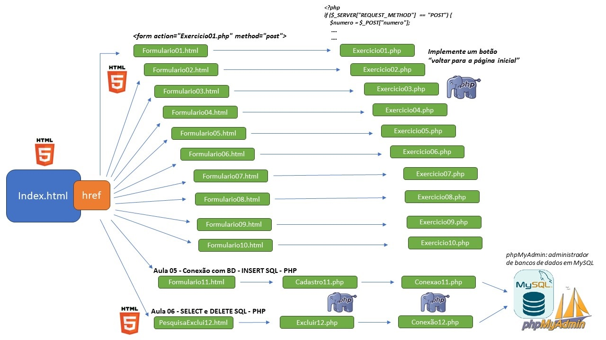

Linguagem de Programação I - ADS - FMP - Prof. Rafael
Lista de Exercícios PHP
Nome do aluno: Marlon Roberto Costa
Trabalhos iguais não serão considerados
- Exercício 1 - Verificação de Número Positivo, Negativo ou Zero (0,1 pt)
- Exercício 2 - Tabuada de um Número (0,1 pt)
- Exercício 3 - Cálculo do Fatorial com Recursão (0,1 pt)
- Exercício 4 - Calculadora com SwitchCase (0,1 pt)
- Exercício 5 - Verificação de Número Par ou Ímpar (0,1 pt)
- Exercício 6 - Impressão de Valores em Ordem Crescente (0,1 pt)
- Exercício 7 - Comparação de Valores A e B (0,1 pt)
- Exercício 8 - Cálculo da Média Final de um Aluno SGA (0,1 pt)
- Exercício 9 - Verificação de Maioridade (0,1 pt)
- Exercício 10 - Identificação do Mês pelo Número (0,1 pt)
- Exercício 11 - Cadastro de Alunos e Carga Horária para Atividades Complementares (0,5 pt)
- Exercício 12 - Realizando Buscas e Exclusão de Registros no Banco de Dados com PHP (0,5 pt)
- CSS (0,5 pt) - Considerando em todos os arquivos
